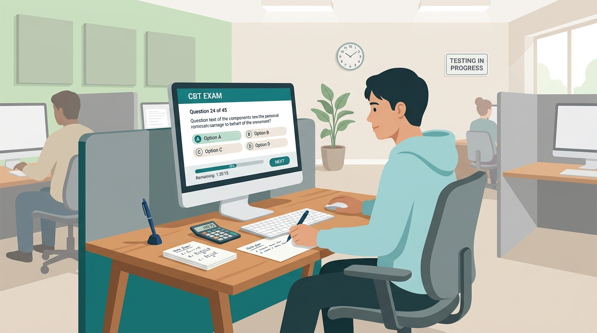

「お金の知識を身につけたいけれど、金融業界の経験がなくてもFP3級に合格できる？」
「仕事や家事で忙しい中、独学で受かる勉強時間はどれくらい？」
「2024年から始まったCBT方式（パソコン受験）って、どんな試験なの？」
FP（ファイナンシャル・プランニング技能士）3級は、税金・年金・保険・資産運用・不動産・相続といった「一生役立つお金の基本教養」が体系的に学べるため、社会人・学生・主婦層まで年間十数万人以上が受験する超人気国家資格です。
結論から言うと、FP3級は知識ゼロの完全初心者でも、正しい手順で学習すれば「約30〜50時間（1日1時間で約1ヶ月）」の完全独学で一発合格が可能です。
本記事では、初心者が最短で合格点（60%）を突破するためのスケジュール、2024年以降に完全移行したCBT方式の注意点、6大分野の優先順位、よくある失敗パターンまで、徹底的にわかりやすく解説します！
この記事の重要ポイントまとめ
- 合格率と難易度： 日本FP協会で約70〜80%、きんざいで約40〜60%。6割正解で合格できる絶対評価。
- 必要な勉強時間： 初学者で約30〜50時間（1日1時間で約1ヶ月〜1.5ヶ月で十分狙える）。
- CBT（ネット試験）化： 年中好きな日時にテストセンターで受験可能。合悲も試験直後に即判明。
- おすすめの学習順： 「ライフプラン（年金）」→「タックス（税金）」を先に固めるのが最短ルート。
- 合格の黄金比： 「テキスト通読 2割 ： 過去問・問題演習 8割」のアウトプット重視が鉄則。
1. FP3級は知識ゼロから本当に独学で受かるのか？
「金融や簿記の勉強をしたことがないから不安……」という方もご安心ください。FP3級は法律・金融系の国家資格の中でもトップクラスに初心者が挑戦しやすい設計になっています。
① 合格率は高水準（約50〜80%）
FP3級試験は、「日本FP協会」と「金融財政事情研究会（きんざい）」の2つの団体が実施していますが、どちらを受験しても合格すれば同じ「3級ファイナンシャル・プランニング技能士」の国家資格を取得できます。
| 実施機関 | 実技試験の科目 | 学科合格率 | 実技合格率 |
|---|---|---|---|
| 日本FP協会 | 資産設計提案業務 | 約70〜80% | 約75〜85% |
| きんざい（金財） | 個人資産相談業務 / 保険顧客資産相談業務 | 約40〜60% | 約45〜60% |
一般的に、日本FP協会のほうが問題文が素直で選択肢も選びやすく、合格率が高い傾向があります。金融機関にお勤めで会社指定がある場合を除き、一般の独学受験生には日本FP協会（資産設計提案業務）での受験が圧倒的におすすめです。
② 満点不要！6割（60点）取れれば誰でも合格
FP試験は相対評価（上位〇％が合格する競争試験）ではなく、学科・実技ともに得点率60%以上で全員が合格できる絶対評価です。難しい難問や重箱の隅をつつくような知識は思い切って捨て、頻出の基礎問題を確実に取れば確実に合格できます。
2. 合格に必要な勉強時間の目安と「1ヶ月合格スケジュール」
① 勉強時間の目安：30〜50時間
初学者の標準的な学習時間は30〜50時間です。平日1時間、休日2時間を確保できれば、約3〜4週間（約1ヶ月）で合格水準に到達します。すでに簿記3級や宅建の学習経験がある方なら、20〜30時間程度で合格するケースも少なくありません。
② 【1ヶ月完成】週別合格ロードマップ
短期集中で一発合格を目指すための、無理のない4週間スケジュールがこちらです。
4週間・週別学習スケジュール
- 【第1週】全体像把握期（学習時間：約8〜10時間）
- 市販のテキストをサッと1周流し読みする。「ライフプラン」「タックス」を中心に、全体でどんなテーマがあるかを掴む（※この段階で暗記しようとしないこと）。
- 【第2週】分野別演習期（学習時間：約10〜12時間）
- テキストで1章読んだら、すぐに該当分野の過去問（1問1答）を解く。間違えた選択肢の理由を確認し、理解を深める。
- 【第3週】過去問集中期・実技対策（学習時間：約12〜15時間）
- 過去3〜5回分の本試験過去問を演習。実技試験（計算問題・資料読み取り）の形式に慣れる。
- 【第4週】直前総仕上げ・弱点補強（学習時間：約8〜10時間）
- 間違えた問題の総復習、頻出用語集での知識チェック、6大係数や税額控除の数値を最終確認する。
3. 2024年本格移行！「CBT方式（ネット試験）」の全貌と対策

CBT試験ではパソコン画面を見ながら手元のメモ用紙・電卓を使って解答する
FP3級は、2024年4月から従来の紙の一斉ペーパー試験から、パソコンで受験する「CBT方式（Computer Based Testing）」へと移行しました。
CBT試験の3大メリット
- いつでも受験できる： 決まった試験日（年3回）を待つ必要がなく、全国のテストセンターで年中いつでも自分の都合に合わせて受験可能。
- 試験直後に合否がわかる： 画面上で「試験終了」をクリックした瞬間にスコアレポートが表示され、即座に合否判定を確認できます。
- 再受験しやすい： 万が一不合格でも、最短で翌月や数週間後にすぐ再チャレンジできます。
CBT受験で初心者が注意すべき3つの落とし穴
CBT試験のリアルな注意点
- 問題用紙に直接書き込めない： 画面を見ながら、会場で配られる計算用紙（A4用紙2枚程度とボールペン）に手書きでメモを取る必要があります。普段から「画面を見ながら手元の紙で計算する」練習をしておきましょう。
- 電卓の持ち込み制限： 一般的な四則演算電卓（12桁推奨）は持ち込み可能ですが、スマホや高機能関数電卓は不可です。
- 見直しフラグ機能の活用： 自信がない問題には画面上で「あとで見直す」チェックを付けておくと、最後の見直し画面からワンクリックで戻れます。
4. 挫折しない！FP6大分野の「最も効率的な攻略順序」
FP試験の出題範囲は多岐にわたりますが、勉強する順番を変えるだけで理解スピードが2倍以上変わります。おすすめの黄金ルートをご紹介します。
1① ライフプランニングと資金計画（最優先）
FP倫理、社会保険（健康保険・雇用保険）、公的年金（国民年金・厚生年金）、教育資金・住宅ローンなどを学びます。全分野の土台となるため、必ず最初に学習しましょう。特に「老齢基礎年金・老齢厚生年金の受給要件」は最頻出です。
2② タックスプランニング（税金）
所得税の仕組み（10種類の所得分類、所得控除、税額控除）を学びます。税金の知識は、この後の「金融資産運用」「不動産」「相続」すべての分野に密接にリンクするため、前半のうちにタックスの基礎を固めておくのが最大の合格の秘訣です。
3③ リスク管理（保険）
生命保険と損害保険の基本、保険金受取時の税金関係を学びます。定期保険・終身保険・養老保険の違いや、クーリング・オフ制度、セーフティネット（生命保険契約者保護機構）が定番論点です。
4④ 金融資産運用（投資）
株式・債券・投資信託・外貨預金や、新NISA制度を学びます。PER・PBRや債券利回りの計算問題が出ますが、公式さえ当てはめれば小学生の算数レベルです。苦手意識を持たずに公式をパターン化して攻略しましょう。
5⑤ 不動産
不動産の登記制度、売買契約、建築基準法（建ぺい率・容積率）、不動産取得税や譲渡所得の特例（3,000万円特別控除など）を学びます。宅建試験と範囲が被るため、宅建の学習経験がある方には最大の得点源になります。
6⑥ 相続・事業承継
法定相続人と法定相続分、遺言（自筆証書・公正証書）、遺留分、相続税の基礎控除額（3,000万円＋600万円×法定相続人の数）、贈与税の暦年課税（年110万円控除）などを学びます。親族図を描いて相続分を計算する実技試験の定番テーマです。
6分野の重要語句を総復習するなら
当サイトでは、FP3級・2級の合格に必須の専門用語を全108語収録した『FP頻出用語集』を無料公開中！ブックマーク機能（☆/★）や分野別検索でスキマ時間に効率よく復習できます。
FP頻出用語集（108語）を見る5. 一発合格者が実践している「3つの勉強黄金ルール」
ルール①：テキストの1周目は理解度40%でサッと流す
独学で挫折する人の最大の原因は「最初からすべて暗記しようとしてテキストが進まなくなること」です。FPは6分野もあり、最初から完璧に理解しようとすると途中で燃え尽きてしまいます。1周目は「こんな仕組みがあるんだ」と全体像を把握する程度で流し、早めに問題演習に入りましょう。
ルール②：アウトプット8割・インプット2割の黄金比
知識は「問題として問われ、間違えて解説を読んだとき」に最も脳に定着します。テキストを3回読むよりも、過去問を3周解くほうが圧倒的に短期間で合格点が取れるようになります。
ルール③：間違えた問題は「解説の理由」を1行メモする
「正解はアだった」と確認するだけでは不十分です。「なぜイは間違いなのか（× 5年 → ○ 10年）」と、誤りの数字やキーワードを突き止める習慣をつけると、本番のひっかけ問題に驚くほど強くなります。
6. 要注意！FP3級で落ちる人の「よくある失敗パターン5選」
合格率の高いFP3級でも、毎年数万人が不合格になっています。落ちてしまう人に共通する落とし穴を事前に把握しておきましょう。
- 失敗①：学科ばかりやって実技対策を直前まで放置する
実技試験は「学科の知識を使った計算・資料読み取り」です。出題形式が異なるため、試験の1週間前には必ず過去の実技問題を解いておく必要があります。 - 失敗②：6大係数の計算でパニックになる
「終価係数」「現価係数」「年金終価係数」などの計算は、係数表の数値を掛け算するだけです。意味を難しく考えず、「現在→将来なら終価係数」「将来の目標額の積立額なら減債基金係数」とパターンで覚えましょう。 - 失敗③：法改正前の古いテキストや過去問を使ってしまう
FP試験は法改正（新NISA、贈与税加算年数、年金受給開始年齢など）が極めて狙われやすい試験です。必ず最新年度の教材や信頼できるWebツールを使用してください。 - 失敗④：電卓の持ち込みを忘れる・使い慣れていない
スマホの電卓アプリで練習していると、本番で普通の電卓を打つ際にキー配置や操作に戸惑います。必ず本番で使う電卓で過去問を解きましょう。 - 失敗⑤：前日の一夜漬けで詰め込もうとする
FP3級は一夜漬けで乗り切れるほど範囲が狭くありません。1日30分〜1時間でも良いので、最低2〜3週間の学習期間を確保するのが確実です。
7. まとめ＆Shikakusで今すぐ始める無料アウトプット演習
FP3級は、お金に関する知識を網羅的に身につけられる、非常にコストパフォーマンスの高い資格です。就職・転職の履歴書に書けるだけでなく、日々の家計管理、住宅ローン選び、資産運用、老後の年金対策まで、一生にわたって自分自身を助けてくれる強力な武器になります。
完全独学でも、「全体像をサッと掴む → 過去問演習を繰り返す」というシンプルな王道ルートを守れば、誰でも1ヶ月で合格を勝ち取ることができます！
今すぐFP3級の過去問演習を始めよう！
Shikakusでは、FP3級の学科・実技試験の過去問題をすべて完全無料・登録不要で解き放題！
分野別演習や年度別本番模試で、即座に弱点を克服できます。